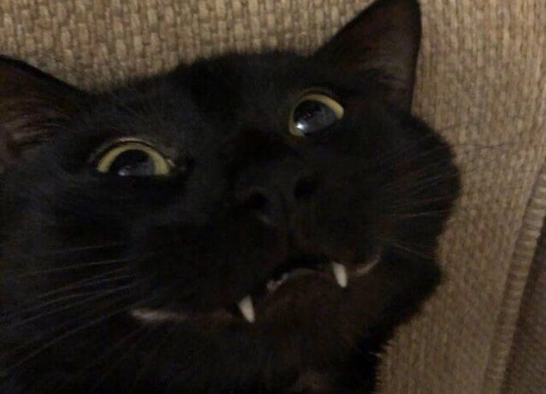

Сторінка автора
Привіт! Мене звати Чміль Вадим, і я тут, щоб поділитися своїм веселим світом!
Я енергійний, допитливий і трохи безбашений хлопець, який обожнює сміятися навіть у найсерйозніші моменти. Люблю машини, геймерські штуки, а ще – цікаві подорожі і нові знайомства. Мій день починається з кави, музики на повну гучність і невеликої дози хаосу, бо тільки так я почуваюся живим.
Я завжди готовий до пригод, люблю несподівані повороти та смішні ситуації. Можу сміятися з будь-чого і легко заводжу нових друзів. Мій гумор іноді трохи дивний, але він завжди щирий. Обожнюю тварин, особливо кішок і собак, і завжди готовий підкинути ідею для чергового божевільного експерименту або творчого проекту.
Крім веселощів, я люблю розвивати себе: читаю книги, дивлюся документалки, пробую нові хобі та вчуся всього, що здається цікавим. У мене багато ідей, і часто я не можу вирішити, з якою з них почати спершу – такий мій маленький хаос творчості.
Вірю, що життя потрібно проживати на повну: сміятися, помилятися, вчитися, дружити і завжди залишатися собою. Мій девіз: Якщо щось здається нудним – додай трішки сміху, і воно стане крутим! А ще я люблю спонтанні ідеї, довгі вечори з друзями і каву під будь-який настрій.
Мої улюблені цитати
"Життя надто коротке, щоб сумувати." "Сміх робить навіть найпохмуріший день яскравішим." "Важливо залишатися собою і не боятися веселитися."
- Люблю котиків
- Ціную гармонію
- Надихаюся світом фантазії